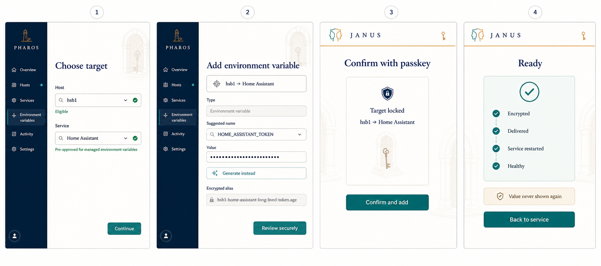
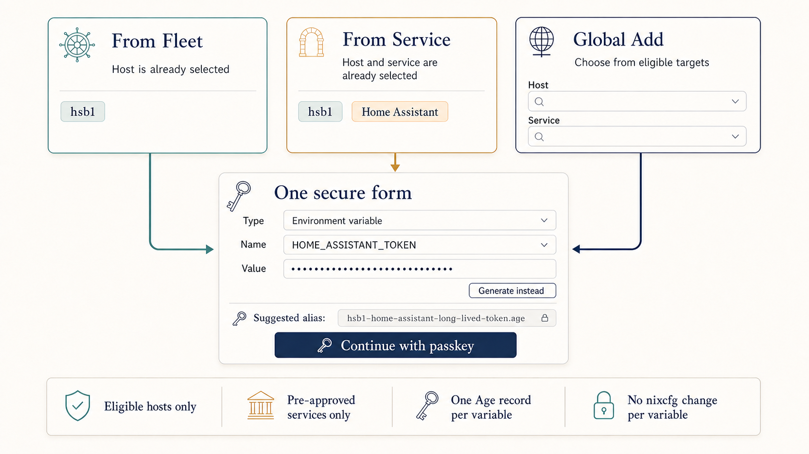
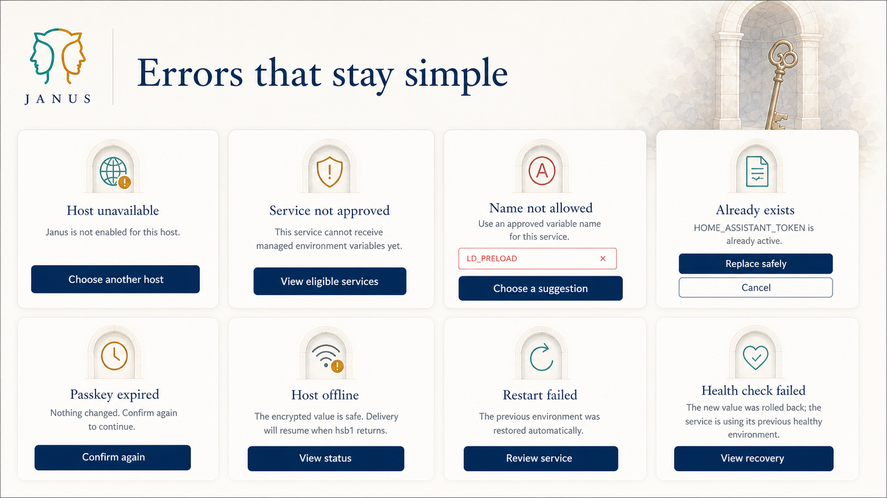

Select one eligible host and one pre-approved service. From a host or service page, Janus locks the context it already knows.
The product decision
One small form, with context filled in whenever Janus already knows it. No Nix change for each new variable; only services explicitly approved in nixcfg may receive one.
Implementation: JANUS-390 · Contract: guideline/dynamic-service-environment-bindings
Host-first
Eligible targets only
Approved services only
Environment variables
Age encrypted
Passkey confirm
No reveal
Automatic rollback
01
The complete happy path
Four screens from intent to a healthy service. Click the board to inspect the full-size ImageGen concept.

Enter the environment-variable name and secret value. Janus suggests a readable alias such as hsb1-home-assistant-long-lived-token.age.
Review host, service, and variable name—never the value—and approve the operation with a passkey.
Janus reports encrypted, delivered, restarted, and healthy. If restart or health fails, the previous version is restored.
02
Minimal typing, wherever you start
The same secure form adapts to its entry point. Dropdowns remain searchable, constrained, and free of invalid choices.

The selected host is locked; choose only from its approved services.
Host and service are both locked; type only the variable name and value.
Searchable host and service dropdowns; selecting a host narrows the services.
Normalize the variable name, preview the friendly alias, and clearly offer safe replacement when the variable exists.
03
Every important failure has one next action
Errors say what happened, protect the existing service, and offer the smallest safe recovery.

Host unavailable
Keep the draft; choose another eligible host or refresh target state.
Service not approved
Do not allow delivery. Link to the nixcfg approval requirement.
Name not allowed
Explain the rule and reject unsafe names such as LD_PRELOAD.
Variable already exists
Offer “Replace safely”; retain the old encrypted version for rollback.
Passkey expired or cancelled
Preserve the form locally and let the user confirm again.
Host went offline
Store the encrypted record safely, mark delivery pending, and retry explicitly.
Restart failed
Restore the prior environment file and prior service state; show the diagnostic.
Health check failed
Rollback automatically, verify the old version is healthy, and report both outcomes.
04
The safety contract beneath the simple form
The UI stays small because Janus enforces the complex rules underneath it.
Only known hosts and nixcfg-approved services appear. Dynamic variables need no per-variable nixcfg edit.
Each variable is stored as its own Age-encrypted record. Friendly filenames are aliases or suggestions; canonical storage remains opaque.
The host builds a service-specific runtime .env file privately and replaces it atomically.
Only the selected service is restarted. Janus then runs the service’s defined health check.
The previous encrypted value and runtime file remain available until the new service state is proven healthy.
The value can be submitted or replaced, but never revealed or copied back through the Janus interface.